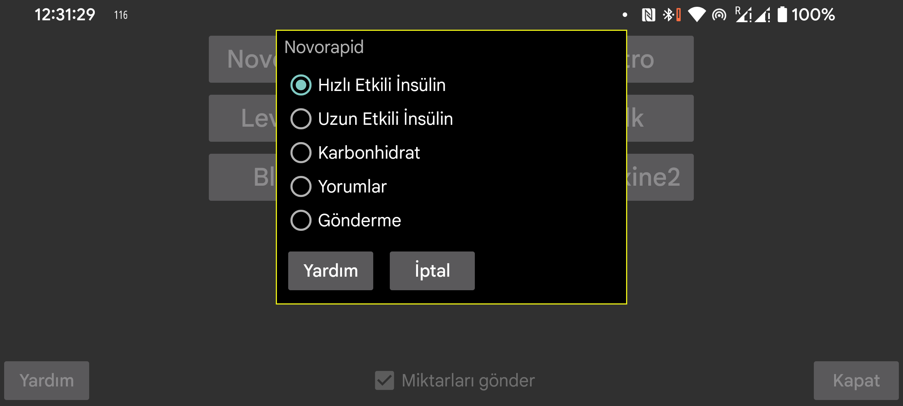

be de fr nl pl pt ru tr uk zh en
Libreview'da oldugu gibi, Juggluco'da da Nightscout sunucusu üzerinden miktarlarin nasil temsil edilecegini belirleyebilirsiniz.
Belirli bir etiket altinda girilen Juggluco'daki miktarlarin Libreview'e nasil gönderilecegini seçin. Ayni Libreview etiketiyle birden fazla miktar türü göndermek mümkündür. Örnegin, Juggluco'da Karbonhidrat ve Saf Glikoz gidasini ayri etiketler altinda puanlarsaniz, her ikisi için de Libreview'e Karbonhidrat olarak gönderilmeleri gerektigini belirtebilirsiniz.
Karbonhidrat için, Juggluco'da verilen miktari belirli bir sayiyla çarpmak mümkündür, böylece diger birimleri grama dönüstürebilirsiniz. Juggluco'da 10 gramlik porsiyonlari sayarsaniz buraya 10 girebilirsiniz, böylece gramlar Libreview'e gönderilir.
Yorumlar Librelink'e yorum eklemissiniz gibi miktarin Libreview'e gönderilecegi anlamina gelir. Burada yorum belirtirseniz, Etiket arti o etiket için girilen sayi gönderilir. Örnegin: "Bisiklet 50", "Bisiklet" etiketiniz varsa ve o etiketin altina "50" girdiyseniz "Bisiklet 50" belirtilen zamanda Libreview'deki "Günlük kayit" grafiginin altinda gösterilecektir.